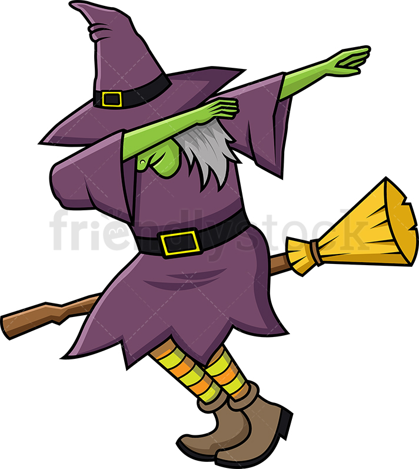

    <!DOCTYPE html>
    <html lang="en">
    <head>
        <meta charset="UTF-8">
        <meta name="viewport" content="width=device-width, initial-scale=1.0">
        <title>JSMAOM.com</title>
        <link rel="stylesheet" href="index.css" />
        <link rel="stylesheet" href="site.css" />
        </head>
    <body>
        
    </body>
    </html>
    <body>
        <header><h2><u>Josh Sweetens Magical Academy of Magic</u></h2> </header>
        
            <main>
                <div class="head"><h1><u>WELCOME!</u></h1></div>
                    <p><strong>Welcome welcome welcome!</strong> This is Josh Sweetens Magical Academy of Magic!
                    You will learn many new and wonderful skills with us today, things such as,
                    <ul><li>How to turn someone into a frog</li>
                    <li>How to pull a rabbit out of a hat</li>
                    <li>How to channel spirits and make conversation</li>
                    <li>How to transmute everyday objects into completely different ones</li>
                    <li>How to fly on a broomstick! <strong>YES!</strong> like a witch!</li>
                    </ul>
                </p>
                <p class="class1"><u>All about magic</u></p>
              <p class="About">
                    Welcome to the wonderful world of the mystical arts, we hope you enjoy your<br>
                    journey with us as we traverse through the land unbeknownst to most humans <br>
                    these days. First we will begin with something simple like turning into an animal
                    </p>
                    <h3><u>Dont you wanna be able to turn into these?</u></h3>
                    <section>
                        <div class="img"></div>
                        
                    </section>
                    <p>Next i'll give you the 4 main steps of transmutation</p>
                    <div class="steps">
                        <p class="first-term"></p><u><strong>Step 1:</strong></u></p>
                        <ul><li><p class="second-term">You must find yourself</p></li>
                        <li><p class="third term">This will help you understand what you are</p></li></ul>
                    </div> </display:inline-block>
                    <div class="steps">
                    <p class="first-term"></p><u><strong>Step 2:</strong></u></p>
                        <ul><li><p class="second-term">You must learn to focus deep within</p></li>
                        <li><p class="third term">See your spirit form</p></li></ul></div>
                        <div class="steps">
                            <p class="first-term"></p><u><strong>Step 3:</strong></u></p>
                        <ul><li><p class="second-term">Begin to remember your spirit form</p></li>
                        <li><p class="third term">Take hold of it, feel the spirit</p></li></ul>
                    </div>
                    <div class="steps">
                        <p class="first-term"></p><u><strong>Step 4:</strong></u></p>
                        <ul><li><p class="second-term">Begin to befriend the spirit</p></li>
                        <li><p class="third term">Lastly, mold yourself into whatever you desire</p></li></ul></div>
                    </div>
                    <div class="witchy"><p><strong><h1><u>Maybe you'll even be able to do this someday</u></h1></strong></p></div>
                    <div class="witch"> </div>
                    <div class="end"><p><h1>Well until next time folks!</div>
                    <div class="end1"><h1>Im glad you checked my site out and i hope you have<br></div>
               <div class="end2"> <h1>a better understanding of the mystic arts and more inspiration<br></div>
                    <div class="end3"><h1>to get out there and make your world more <strong><u>MAGICAL!</u></strong></h1></p></div>
                    </main>
        <footer>
        This document was written and created by Joshua Sweeten<br>
            Here is a ist of other links for more information about the use of Magic<br>
          <ul>
              <li><a href="https://en.wikipedia.org/wiki/Magic_(supernatural)">Wiki magic</a></li>
            <li><a href="https://mythology.wikia.org/wiki/Magic">Mythology of magic</a></li>
            <li><a href="https://www.theory11.com/beginner-magic">Magic tricks</a>
               <li><a> <div>Icons made by <a href="https://www.flaticon.com/authors/freepik" title="Freepik">Freepik</a> from <a href="https://www.flaticon.com/free-icon/facebook_174848" title="Facebook.png">Facebook icon</a></div></a></li>
            </ul>

             
          
            
        
        </footer>

        

    </body>
</html>